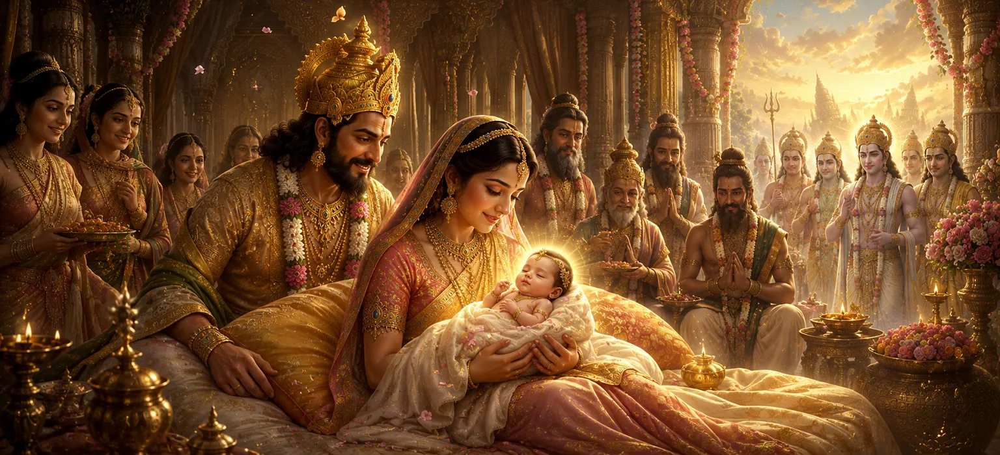

The sacred boon granted to Dakṣa Prajāpati now began to bear fruit. The Divine Mother, whose grace had guided the cosmic plan from the beginning, prepared to incarnate upon the earth for the welfare of creation. The gods rejoiced, knowing that the long-awaited moment had arrived. Through Dakṣa’s family, the Supreme Goddess would manifest in human form and begin a divine chapter that would forever be remembered in the sacred history of Lord Shiva.
The birth of Sati was not an ordinary event. It was the fulfillment of a divine promise and an essential step in the unfolding cosmic drama. Through her incarnation, the Supreme Goddess would prepare the path for her future union with Lord Shiva, a union destined to restore balance, strengthen Dharma, and guide the spiritual evolution of the worlds.
As the time of the Divine Mother's incarnation approached, auspicious signs began to appear throughout the worlds. Gentle breezes carried sweet fragrances, celestial flowers rained from the heavens, and an atmosphere of peace spread across creation. The gods understood that a sacred event of immense significance was about to take place.
In due course, the Supreme Goddess took birth as the daughter of Dakṣa Prajāpati. The child radiated extraordinary beauty and divine brilliance from the very moment of her birth. Her presence filled the hearts of all who saw her with joy, wonder, and devotion. Dakṣa and his family rejoiced, unaware that this child was the embodiment of the eternal Divine Mother.
The divine child was given the name Sati, a name that reflected purity, virtue, truthfulness, and unwavering devotion. Even in her infancy, signs of her extraordinary nature could be perceived. Those who came into her presence felt an indescribable peace, as though they were standing before a manifestation of the Divine itself.
The gods celebrated the birth of Sati with great joy. They knew that her arrival marked the beginning of a sacred chapter in the cosmic plan. Hidden within this seemingly ordinary birth was the destiny of a future union that would profoundly influence the worlds and become one of the most revered stories in Hindu tradition.
Sati embodied purity of heart, thought, and action from birth.
Her presence brought peace, joy, and spiritual inspiration to all.
She was destined to become the devoted consort of Lord Shiva.
Although Dakṣa saw Sati as his beloved daughter, the deeper purpose of her birth extended far beyond his household. She had descended to fulfill a divine mission and to play a central role in the cosmic balance between Shakti and Shiva. Her life would become a bridge between the earthly and the eternal.
As Sati grew, her divine qualities became increasingly evident. She displayed exceptional wisdom, compassion, and spiritual inclination from an early age. Her mind naturally gravitated toward sacred subjects, and she delighted in hearing about the greatness of the gods and the mysteries of the universe.
The birth of Sati marked the beginning of a journey that would eventually lead her toward Lord Shiva. Though that destiny was still hidden from most, the forces of the cosmos had already begun aligning to bring about their sacred union. Every event from this point onward would gradually guide Sati toward her divine purpose.
The birth of Sati reminds devotees that the Divine often enters the world in simple and humble ways. What appeared to be the birth of an ordinary child was, in reality, the manifestation of the Supreme Mother. Through this episode, the Shiva Purana teaches that divine purpose may be hidden beneath ordinary appearances, awaiting the right time to reveal itself.
By taking birth as Sati, the Supreme Goddess chose to experience life within the human world. Her incarnation demonstrated the closeness of the Divine to creation and showed that the highest spiritual truths can be expressed through human relationships, devotion, and sacrifice.
With Sati’s birth, a new chapter in the sacred history of Shiva and Shakti began. The divine forces that govern the universe were gradually bringing together two eternal principles—Lord Shiva, the supreme ascetic, and Sati, the embodiment of Divine Energy. Their future union would become one of the most celebrated events in Hindu tradition.
The Divine Mother has now appeared in the world as Sati. Her childhood and spiritual growth will soon reveal the extraordinary purpose of her incarnation. The next chapter explores how Sati’s devotion begins to manifest and how her heart gradually turns toward the great Lord Shiva.
"Though the Divine may appear as a child, every action carries hidden wisdom. The playful steps of the Goddess are often the first signs of a destiny that will transform the worlds."
The Divine Mother has now taken birth as Sati, bringing joy to the gods and hope to the worlds. As she grows within Dakṣa’s household, her extraordinary nature begins to shine through even the simplest moments of childhood. The next chapter reveals the sacred childhood sports of Sati and the early signs of her divine destiny.